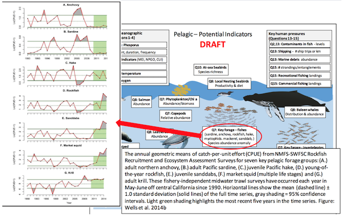
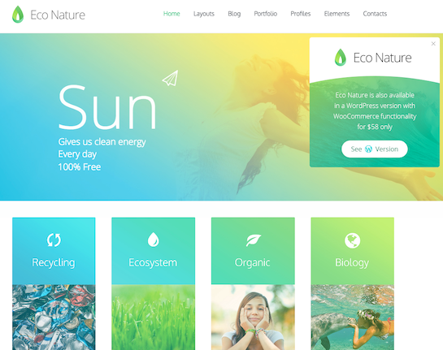

marinebon.github.io/rmd_pres/2016-08-29_comm
Tiered approach based on user profiles of increasing technical capacity:
Initial overview visual of results with basic description
Audience: low-tech, fast decision making (eg sanctuary deputy)
More scientific background
Audience: more discernment for scientific community (marine biodiversity scientist)
How to generate the product with code
Audience: full on geek out on how to do it yourself! (mbon analyst)
Climate status from NOAA's http://climate.gov home page.
Dashboard Temperature: click "learn more >>"
Sanctuary:
Habitat:
Jenn Brown's visual explorer. Could have dropdowns to select sanctuary & habitat.
Separate roles per content:
Visit Eco Nature HTML Template. Note the many pleasing dynamic elements with hover and scrolling. Many more themes at ThemeForest.net
Eco Nature theme